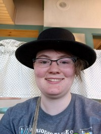

My name is Amber, though I also go by Aki especially online. I’m Non-Binary and
Aromantic Asexual. I have been diagnosed with ADHD, Autism, Anxiety, and Depression
but am doing what I can to cope with all of them. I may need to ask clarifying questions
and so on. I’m in my late 20’s and still trying to learn how to adult. I love to do art and
have been practicing since I was a small child and am now going to college for
Illustration.
Fun facts about me:
I love animals, especially foxes. I own a pet dog that’s at my mom’s named Rosie, and
she is a Lab/Pitbull mix. I did have a cat as well, but he went missing.
I love anime though often can’t manage the attention span to watch much anymore.
I also love to read fanfics and write a bit of my own on occasion.
I somehow managed to drag my friend back into Bleach by accident.